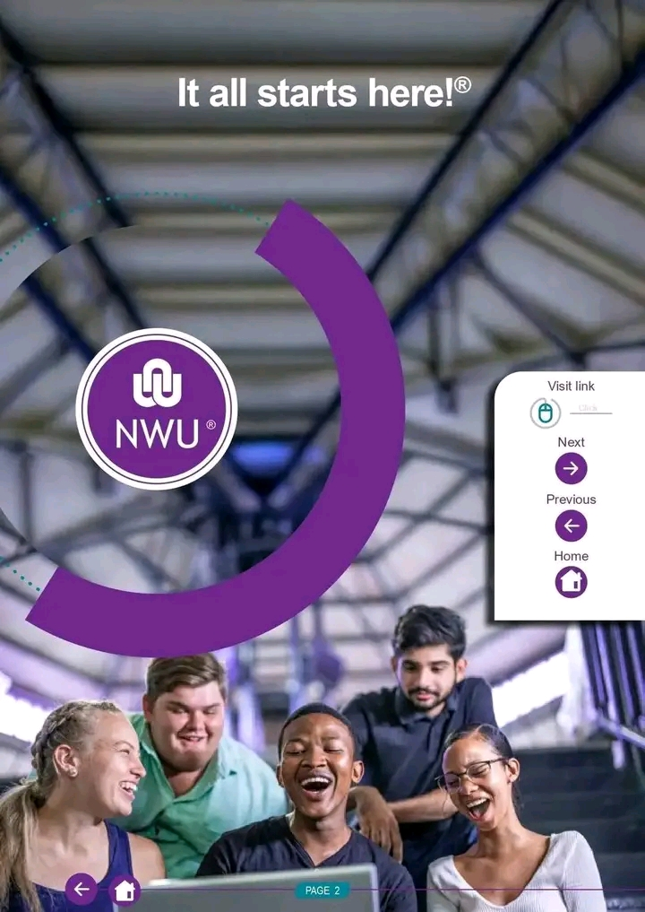

This is your one-stop place for campus resources, study help, student wellness, and university guidance. It's made to help NWU students do well in their studies and campus life. Starting university can feel confusing for many first-year students. This platform was made to make student life easier. It gives you quick access to important campus info, academic help, campus map, and student guidance.
